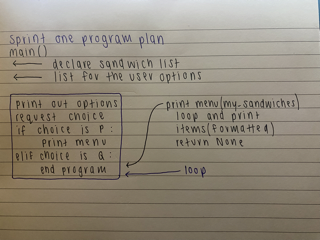
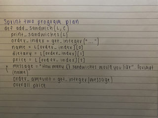
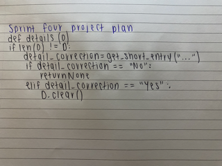
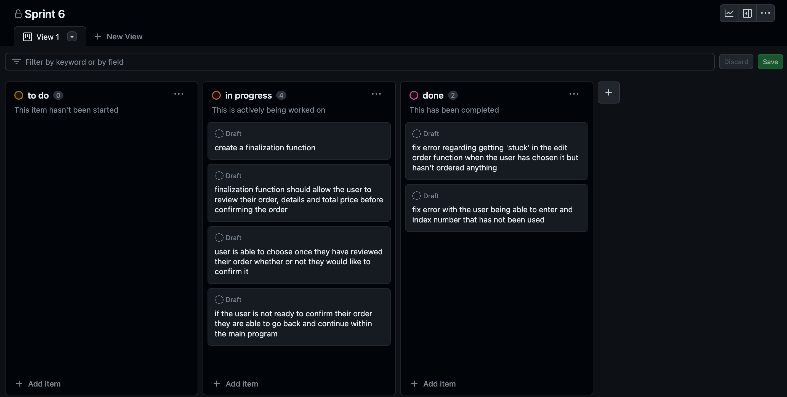

Brief
The aim of my internal is to create a program which allows users to have an interactive ordering experience from Marsden’s Gourmet Sandwich Bar. This means my program is able to document the customers order and then allow them to review their order when called upon to do so. It needs to be able to show the completed order and total cost of it and for users to be able to edit what they have ordered. The program needs to offer delivery options and take customer information so that it knows who has ordered what. When an order is completed, the program needs to offer an option for a new order to be placed otherwise it needs to complete the order and finish.
Starting Project Backlog
Relevant Implications
Future Proofing
Describe - The program (digital product)
- Can be updated easily
- Follows convention of building that is widely understood
- Uses a technology that we are confident will be easily available in the future.
Future proofing is incredibly important when creating a digital product. Future proofing looks into making sure the digital product will be useful and easy to use in the future without it being irrelevant or too old of a program. To make sure a digital product has good future proofing it needs to be able to be updated easily, this means that parts are able to be changed and updated without the whole product having to be changed or redone. The product also needs to follow a convention of building that is widely understood so that others will be able to use and work the digital product. It all needs to be built with a technology that we have confidence in that it will be easily available in the future and not have been replaced by something else or just disregarded.
Functionality
Describe
- The product works properly
- It gives correct consistently formed results for any input
- The program must be without errors
Functionality is also very important when creating a digital product. It looks into making sure the product works properly without errors for the user. To have good functionality, a product must work properly in every circumstance and all the data must be produced without errors. It also needs to have consistent results from any input the user may enter and these results have to be correct. Functionality involves consistency and the data being correct in order for a digital product to work properly.
Addressed
- The database has been regularly tested with a wide range of queries
- In the process of testing I found the following errors . . .
Usability
Describe
- Program responses should be easy for the user to understand
- User errors should be in plain english
Usability looks into how easily and efficiently a user can use a digital product, another important relevant implication. In order for a digital product to have good usability, the data it produces needs to be clear. As well as having easily understandable output data it also needs to be in a language the user understands, in this case english. Making sure the product is understandable is so important when trying to increase its usability.
Addressed
- Invalid inputs are explained to the user and the user is advised on what input needs to be entered instead of a program generated errors occurring that doesn’t explain how the error can be prevented.
Sprint One
Sprint Aim
My Sprint One aim is to create a basic program that is able to print all sandwich options for the user, including prices and dietary requirements. I also want to create options for the user allowing them to decide if they want to read the Sandwich menu or leave the program. This needs to be done in order to create a backbone for the rest of my program. As well as this I want to create my GitHub repository, so I am able to store all of my sprints and planning here. Doing all of this means I will be able to build on the site because I will have a good foundation to work off of.
Sprint Board

Sprint Plan
Sprint One Test
In this sprint I have created the basic foundations that I will be able to build a program off. It has a menu so that the user is able to see their sandwich choices, and they can also get the program to end. This allows me to add more complex functions to help the user tailor their experience when ordering and have the easiest experience as possible as there are basic functions they are able to resort back to.

Reflection
Reflecting on this Sprint, I did not encounter any significant errors mainly due to the lack of intricate code used. I created the building blocks for my program in this sprint and this is done with simple yet effective code. Overall this was a problem free sprint that gives me a good base for future sprints once more functions are introduced into my program.
Sprint Two
Sprint Aim
My Sprint Two aim is to develop my program so that customers are now not only able to view the menu but to order sandwiches and review their order. In this review I want the user to be able to see the total cost of their amount of sandwiches they have bought, the individual price of the sandwiches, the dietary category and how many they have ordered of each. When making these I need to make sure I am able to easily develop this system so in future versions customers are able to remove things from their order, select delivery as an option and potentially enabling customers to create custom sandwiches.
Sprint Board

Sprint Plan
Sprint Two Test
In this test I worked to enable customers to be able to order and review their order. I did this by creating two new functions that allowed users to order sandwiches using index numbers and then also look back over their order enabling them to check it and make sure it is correct. These two functions are able to be accessed from the main function menu that the user is presented with. The users ability to view the sandwich menu and quit the program from Sprint One are still available as well.
Reflection
Reflecting on this sprint, I was able to introduce functions to my code and create a more interactive program that allows users to order and then look back on their order. This was done with little to no errors and overall was an easy process. It has also helped me to further my foundation which will allow me to create a more interactive program as having solid basics is importance when doing this. An importance step whilst developing this whole program is to make sure that my formatting of it is consistent throughout the whole program and that the code is printed in a way that the user is able to understand.
Sprint Three
Sprint Aim
My Sprint Three aim is to further develop my program by allowing the user to edit their order. This means they will be able to change the amount of sandwiches that they have ordered and remove ones they no longer want from their order. I also want the user to be able to select whether they would like delivery or pickup for this order. This would also mean that they are able to enter their details into the system and choose their preferred option.
Sprint Board
Sprint Plan

Sprint Three Test
In this test I made sure that the user was able to edit their order if the original amount of sandwiches desired was incorrect or had changed. I did this by creating a new function that called on previous choices by the user that had been created into a list and then allowed them to remove items for this list. In this sprint I also worked on creating a delivery option for the user and asking for their details. This happens within the same function and asks for their preferred delivery method and the subsequent details that are then needed with this.

Sprint Three Error
In this sprint I encountered an error which involved validation. If an invalid index number was entered instead of the program asking the user to enter another index number which is valid it instead crashed the program. This means that if the user accidentally clicked the wrong number of made a mistake when entering the program would crash instead of letting them renter their answer. By validating this it means that the user is able to make a mistake and renter a correct response instead of the program crashing and them losing all of their information.
Reflection
Reflecting on this test there is still a lot of work that needs to be done in terms of validating the program to make it so that it does not crash if an inout is entered by the user that is unexpected. It highlighted the need to fix errors is apparent because otherwise the program will easily crash if there is an unexpected entry. Although these have been identified within this sprint, I will not be fixing validation in a later sprint with all the other aspects that need to be validated. Otherwise, this sprint was a good extension onto my program and helped to continue to personalise my program so that the user is able to tailor it to their needs and wants.
Sprint Four
Sprint Aim
My Sprint Four aim is to add in a customer delivery fee and allow my customer to review and edit/re-enter their details if they are not correct. This will allow customers lee way if they have made a mistake and also make sure that their details are correct which is an important step in the ordering process. The delivery needs to be added only of the user has selected delivery and the user needs to be aware that this has been added onto their order.
Sprint Board
Sprint Plan
Sprint Four Test
In this test I added more functions that enable the user to review their entered details regarding whether they would like pick up or delivery, their address, name and phone number. It also then allows them to re-enter and change their details if they deem them to be invalid or incorrect. I also added in an automatic $3 delivery that the user is made aware of, this is added onto the users total when they review their order. Overall this helps to further personalise the program by asking for the users details and then allows them to change details if they have made a mistake or changed their mind.
Sprint Four Error
An error in Sprint 4 that I encountered was that my function enabling a user to re-enter their details forced the user to re-enter the details even after the user had entered that they did not want to re-enter them. This is an obvious issue due to the fact that it is not listening to the input entered by the user. To fix this issue I had to create a yes/no function, this meant that the program new what to run when the user entered yes or no and all other inputs were invalid. This also meant that the program knew to run through the next designated function with the different responses.
Reflection
Reflecting on this sprint adding a reviewal proved challenging as it highlighted a lot of areas that need to validated and errors such as the re-entering details errors. These errors however can be seen as a positive because once fixed they help to make the program more user-friendly and understandable by making it speak the user's language. Adding in a delivery is needed as the user is requesting an extra service and allowing them to change their details accounts for if they make a mistake or change their mind. With all the functions added so far, the program now allows the user to have a personalised ordering experience that allows them to change their mind and adapt their order.
Sprint Five
Sprint Aim
My Sprint 5 aim is to create a program that has no errors so that the user isn’t able to enter an input that breaks the code and disables them from being able to continue. This involves validating all the code that the user has to enter an answer for so that only certain answers are accepted and so that if an unacceptable answer is entered the user must re-enter an answer whilst be advised on what is an acceptable answer. Validating also includes all little pieces of code so that the user isn’t able to break the code by choosing, entering or typing something that is unexpected to the program. This will help to increase user-friendliness and create a more efficient program.
Sprint Board

Sprint Five Test
In this test I checked to make sure that elements that needed to be validated were working properly. This included making sure that users had to enter a phone number between a certain number of characters and that they couldn’t enter letters into a phone number. It also made sure that they would have to re-enter values if they entered ones that weren’t valid like an index number that was too high. It also looked to make sure that the whole program ran cohesively and was easily understandable for the user.

Sprint Five Errors
The first error I encountered when validating my program was when I was validating the amount of sandwiches that a user is able to remove from the order. This however caused the program to crash if the user entered more sandwiches than initially ordered. I had to fix this so the user is only able to removed up to the amount of sandwiches that they ordered. This not only would stop the programme from crashing but also disable the possible impossible scenario of the user have a negative amount of sandwiches on their order.
Another error that I encountered whilst validating my program was an extension on the previous error and the issues it presented with validating the amount of sandwiches that the user is able to remove. The program would crash out if the user tried to remove the amount of sandwiches that the user had order resulting in the user then having zero of the chosen sandwich. I fixed this by adding minimum and maximum parameters into the get_integer function which I was already using to validate this in the previous issue. The minimum and maximum are set to the maximum amount of sandwiches the user is able to order, and so they can not exceed the number of sandwiches ordered when they are removing sandwiches.
Reflection
Reflecting on this sprint, it was very important to validate my program so that it will not crash on the user. This not only helps with the functionality of my program but also the usability. Usability is so important as the user needs to be able to understand the program, and it needs to speak their language. This means if they have entered an invalid value that they are able to be told that this is an invalid value and that they need to re-enter a value in comparison to being presented with an error explaining the code. It also helps to make sure the functionality of a product works how it is meant too and no unexpected code will be used.
Sprint Six
Sprint Aim
My Sprint Six aim is to create a function that allows my user to finalise their order. This will involve a confirmation by showing them their order one last time and then make sure they confirm they want to place their order. Once confirmed the order will be cleared from the system allowing a new order to start and the user to begin all over again with a cleared program. In this sprint I also want to make sure that there are no errors left in my code. This could be things that have been missed in my validating sprint or errors that have arisen with the new code.
Sprint Board
Sprint Six Test
In this test I thoroughly evaluated my function that finalised my order, this meant I had to make sure that the order could not be processed if the user did not have any details entered or had not ordered any sandwiches. I also had to make sure they were able to change their mind if they decided they didn’t want to fully finalise their order yet and wanted to return to the main program to edit their order, edit their details or order more. This was done with validation so that only certain inputs were accepted and that once the oder was finalised the order was cleared and a new order was started. I also had to make sure that the user was aware this was occurring by being informed of the new order beginning.
Sprint Six Errors
An error I encountered in this version was to do with the program crashing if the user entered an invalid index number. Instead of asking for them to enter a different one because it was invalid it instead crashed. This obviously was an error because they are able to enter and invalid input that then causing the program to crash which is not what we want as this goes against main relevant implication and is an error within the code. To fix this error, I had to make sure the input was validated by disabling the user from entering an index number that was above the length of the customer order list. This meant that now if the user entered an index of 5 when they only have an index of 3, they are asked to re-enter a correct value.
Another error that became apparent within my program was surrounding the removal of sandwiches. If a user decided they didn’t actually want to have any sandwiches of a particular type and removed them all, the sandwiches would stay on the order and just say that zero were ordered instead of removing the sandwich entirely from the menu. Although this error is major because it doesn’t crash my program out, it creates problems surrounding user understanding of the program and could create confusion because the sandwich is there even after the user has removed it. This error however was a simple fix because it just needed validating so that if the amount of sandwiches was equal to zero the program would pop the sandwiches, removing them from the order.
Editing the order seemed to be the main cause for errors within my program and another error that I encountered was one regarding the function being able to present all sandwiches within the order within the output. This was needed to the user could edit their whole order instead of just the first sandwich that they ordered. This called for the output function to be defined above before being called on and for the indention of it to be corrected to that it wasn’t stints outside the code and could be called upon for use.
Another major error that I encountered was within my edit order function. This error in short caused the user to become stuck within the function if they asked to edit their order with no sandwiches ordered prior. If this was done there was no way for the user to go back to the main program which is an obvious problem as it prevents them from being able to use the program. To fix this error I had to make sure that the program had a statement to follow if the length of the order was deemed to be zero. If this happens the program is then able to inform the user that there is nothing ordered, and so they are then able to return to the main options and order sandwiches which then enables them to edit their order once the customer order list has items within it.
Reflection
Reflecting on this Sprint, it highlighted the importance of validation and thorough testing of my program. Throughout my testing I identified many errors that would either cause the whole program to crash, the usability of the program to be poor or other aspects of relevant implications to not be accounted for. These errors if not attended to would cause the program to crash and the user to not be able to finish their order or have any easy and functional experience. All of these errors regarded the user having to enter an input to add, remove or instruct the program as too what they would like to do and could be fixed by validation like creating minimum and maximum inputs or functions enabling only certain inputs to be entered. By fixing these errors I am able to create a functioning program that doesn’t have any risks of crashing or breaking whilst a user is using it.
User Testing
To help and test my program with someone who is not aware of how code works and how the program is meant to run, I got my dad to run through my program and order sandwiches. Whilst doing this he helped to show some of the validation that I had added in so that entries had to match those of expected inputs and that the order could not be finalized if he hadn’t met the criteria needed like an order with sandwiches in it and details about delivery or pick up. Having an individual run my program that is not aware of how coding works is important to develop good usability and test my functionality as it enables errors that a trained eye might overlook to be made apparent.
Git Commit History
Below is an image showing all the Git Commits that were done throughout the creation of my program.
In the Future
In the future to further my program I would like to create an option for the user to customise their sandwich. This would entail them being able to choose bread, meat, vegetables, sauce and possibly even if they wanted it toasted. This would involve multiple functions so that each part could be defined to a certain area. This would also help to deal with the confinement of errors if there were any and helped to make the identification of them an easier process. In doing this I would also be able to make the program fit to the users want and needs and allow them to tailor their experience to how they want it, creating a more personalised experience which should meet their expectations.
Another way I could further my program would be by adding a way for users to be able to view all the ingredients within a sandwich and then add or remove ingredients dependent on their preferences. Like sandwich customisation this would involve multiple functions which was being used and called upon to make a working customisation tool. This again would help to make the program personalised to the user and be able to choose how they would like their sandwiches.
If both of these ideas were added into my program it would help to sophisticate it and create an opportunity for users to fit to the users wants and create and experience that allows them to order exact items and tailor their experience. This would help to improve usability as more people would be open to using the service when being able to customise their order to an extent.
Relevant Implications
Future Proofing
Addressed
- It is designed so that new functions can be easily added to the program without having to change any functions that are already there.
- It is modular.
To address the relevant implication of future proofing I did a couple of things so that my program would be easy to update and use in the future. First of all, to add new functions into my website you do not need to change any current functions. Instead, functions can be added into the code and then linked into the main program using the main options table. My program has also been created using standardised code and a conventional way of construction. This helps with future proofing as it means that if others use it in the future and need to modify any of the code, highly likely they will be able to understand it because it was made conventionally. To help with the understanding if others are looking through my code in the future, I also have commented out my code so that even if there is a piece of code that is confusing as too its function, the comments surrounding it should give a general idea as to what it for. From all of this I can conclude that my program is correctly future-proofed and that users in the future will be able to use my program without any serious problems.
Functionality
Addressed
- The program has been thoroughly tested over multiple sprints.
- In the process of testing I found the following errors . . .
To address the relevant implication of functionality I did a couple of things so that I knew my program was well tested and would work correctly for future users. One way I did this was making sure my program was regularly tested by multiple users and multiple times throughout each sprint. I made sure to try to cause errors when testing my program to make sure that accidental inputs by the user weren’t going to break my code. This proved to be worthwhile as it identified errors within my code like one I found in sprint six, I discovered whilst testing my code that if a user tried to edit their order whilst the order list was empty they would become stuck within the edit order function due to the fact there are no index to select. I was able to fix this however by only allowing the function to run if the list had a length above zero. This helped to make sure the user is able to successfully use my program without encountering errors that would disable them from being able to continue. By doing all of this I am able to be confident in my program’s functionality and know that users won't have issues with it in the future.
Usability
Addressed
- By using comments to explain what code does and making sure it is explained to the user what the accepted inputs are.
Usability is one of the most important relevant implications for my program, and it makes sure the user is able to understand and use the program to its full capabilities without any issues. To address usability I made sure my program was easy to understand and navigate. I did this by making sure all outputs were written in a way that was easy to understand and that if the user did make a mistake they were told what the accepted inputs are. An example of this is when the user is wishing to finalise their order, they are told only yes or no answers are accepted and if a difference answer is entered it once again tells the user to enter yes or no. My code is also easy to understand due to the comments frequently place throughout it to make sure that it is able to be understood if someone is reading through it. By doing this and making sure my program is in english to make it understandable, I can be confident that my program has good usability and future users should have no problems when trying to understand it.